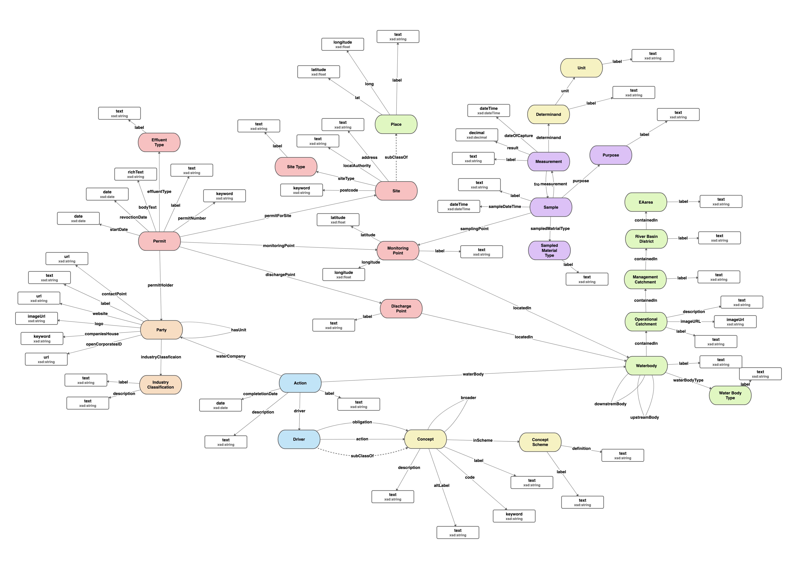

Work in progress to design data models for Environment Agency (and hopefully beyond).

An ontology describing the operational locations asscoaited with the catchment hierrachy. This can be used as reference data for associating locations in data with common areas of interest to users.
A model to describe common forms of reference data or picklist values.
A model describing the types of location commonly referenced by the Environment Agency.
A model describing a common pattern for describing an observation, the place of observation, what is measured and when.
A model describing the individuals or groups who can act as agents. For example hold permits or commit to actions. A specialisation of party allows for describing orgnisations including businesses and their structures.
A model describing the actions taken by water companies
A model describing the actions taken by water companies